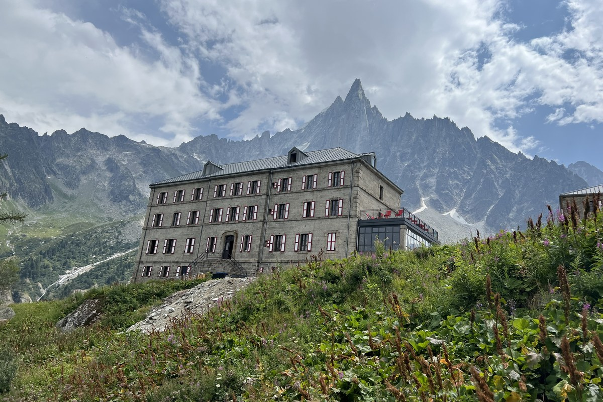

Terrace
Often the simplest option, never a guarantee.
Ask: May my dog use the terrace? Is there shade? Is drinking water available?

Go back to Safety LibraryTerrace, dining room and overnight access are three different decisions. Confirm the one your route actually depends on.
A dog-friendly listing is not a complete answer. Ask the hut manager about the exact space, date and dog you are bringing.
A yes for the terrace does not include indoors or overnight.
Often the simplest option, never a guarantee.
Ask before entering; busy service may change what the hut can manage.
CAI rules require dormitory access with animals to be checked with the manager when booking.
Give the date, number and size of dogs, arrival time and whether you need terrace, indoor or overnight access.
Keep the reply. Reconfirm near the trip if it was booked months ahead or the exact arrangement matters.
Bring water, bowl, leash, waste bags and agreed bedding. Keep the route alternative usable, and check separate lift and muzzle rules.
References checked 25 August 2026: the Club Alpino Italiano accommodation regulations, whose Article 11 requires animals in dormitories to be verified with the manager when booking; the CAI’s current rifugi documentation page; and Rifugio Venezia’s current overnight page, which identifies its summer bivouac for guests with dogs. Individual policies and operating conditions can change.
This is general information, not a diagnosis or a substitute for veterinary care.